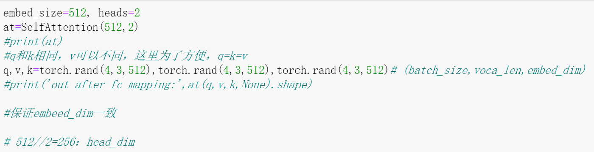
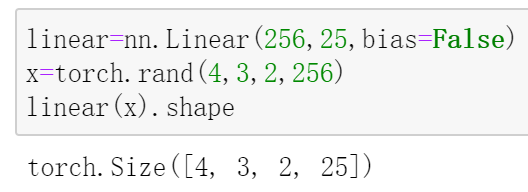
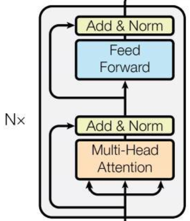
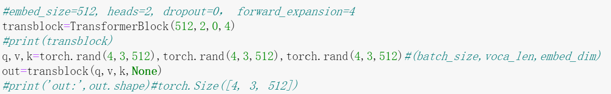
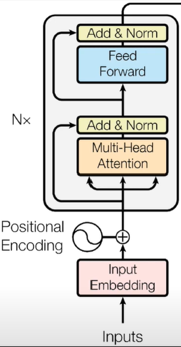
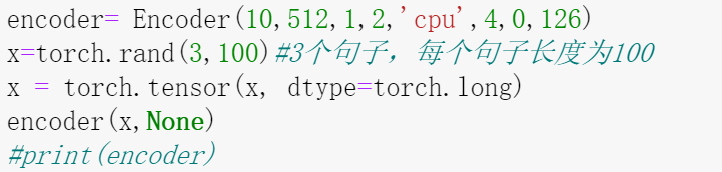
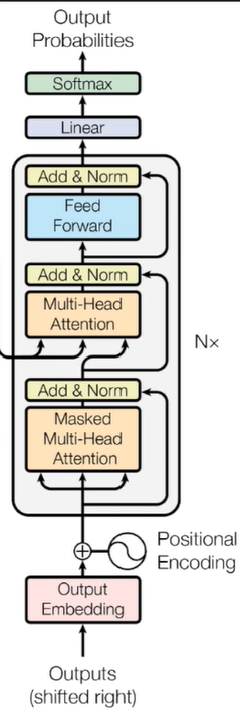
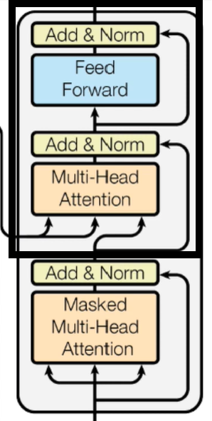
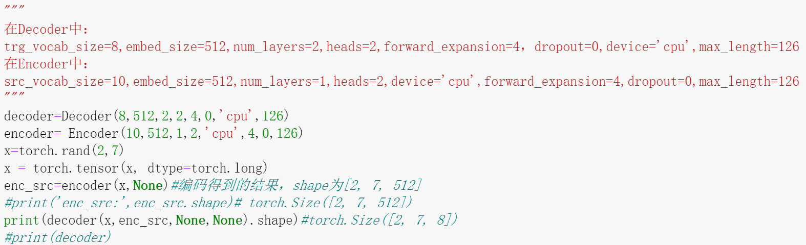
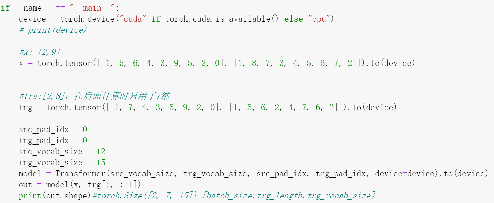

Transformer
Transformer的结构

Transformer的结构如上图所示，我们将其拆解为x个小部分，逐个部分用代码实现，然后再将各个部分联结起来，形成最终的Transformer。
关于Transformer的原理，网上已经有很多优质的文章了，这里我们关心其代码实现。对于其每一个子模块(以类的形式定义)，我们都会实例化一个对象，用具体的数值代入其中，把中间过程中产生的变量维度及相关信息打印出来，这些都体现在代码注释中，请留意。
Muti-Head Attention
Muti-Head Attention接收输入q,k,v，维度在这里都是$[4,3,512]$，输出维度也是$[4,3,512]$。
q和k的维度是一致的，而v可以和它们不一致，这里只是为了方便才将三者维度保持一致。
SelfAttention实现代码如下 (注意注释)
1 | #自注意力模块 |
实例化：
embed_size：编码后维度heads：注意力头数
注意在Pytorch中，nn.Linear层的输入可以是多维的，举个例子：

TransformerBlock
也可以称为EncoderBlock。

TransformerBlock实现如下：
1 | class TransformerBlock(nn.Module): |
若干个TransformerBlock连接在一起组成Encoder。
实例化：

Encoder

将位置信息和输入分别编码，再相加，得到的结果送入堆叠的TransformerBlock，就得到了Encoder，具体实现如下：
1 | class Encoder(nn.Module): |
实例化：

Decoder

与Encoder类似，Decoder主要组成是多个DecoderBlock的堆叠，DecoderBlock结构如下：

其中被框起来的可以看作是一个TransformerBlock，这个在前面已经实现了，所以只需实现下面的那一部分就可以了。
注意从下面右方连接到上面的箭头，它借鉴了残差的思想，做了一个Skip Connection。
DecodrBlock完整实现如下：
1 | class DecoderBlock(nn.Module): |
有了DecoderBlock，就可以实现Decoder了，它和Encoder的实现代码类似，注意着对比学习：
1 | class Decoder(nn.Module): |
实例化：

输入维度是$[2,7]$，这是未编码的。经过Encoder编码得到的enc_src维度为$[2,7,512]$，再经Decoer解码得到的输出维度为$[2,7,8]$。
Transformer
有了以上的组件，就可以将它们组合起来得到Transformer了
1 | class Transformer(nn.Module): |
实例化：

在Decoder的例子中，decoder传入的第一个参数是x，而这里实例化的model对应的Decoder部分传入的第一个参数实际上是trg[:, :-1]，它的维度是$[2,7]$，因此最后的输出维度为$[2,7,15]$。